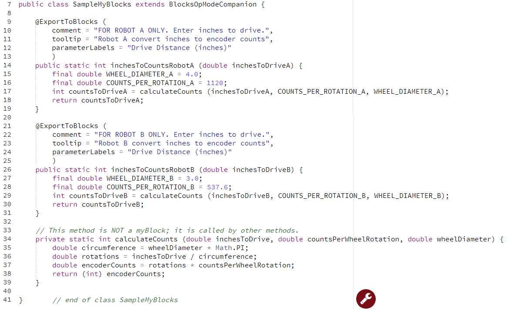
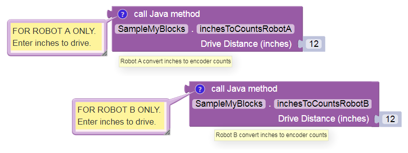

Example: non-myBlock methods
Your Java class may also contain methods that are not myBlocks. Consider this if you have multiple myBlocks that perform a shared internal process or calculation. This is a good programming practice in general, not specifically related to myBlocks.
To illustrate, consider the Driving Example above. Imagine you want to create myBlocks to support two different robots. - Robot A has 4-inch drive wheels with AndyMark NeveRest 40 motors. - Robot B has 3-inch drive wheels with NeveRest Orbital 20 motors. - You want the myBlocks to be very simple for your Blocks programming teammates.
Your solution: - One MyBlock per robot. - Each Blocks user needs to specify only the distance to drive, in inches. - Each myBlock uses the appropriate wheel size and motor encoder CPR. - The myBlocks share a ‘utility’ method to convert distance to encoder counts.

Line 34 shows the shared method that is not a myBlock. Simply omit
the annotation @ExportToBlocks. The keyword private means the method
can be called only from inside the same class. Use this whenever
possible.
Lines 17 and 29 call the shared method. The method calls provide 3 parameters, which do not have the same names as the input parameters of the ‘utility’ method – but their types should match.
At line 38, (int) converts, or casts, a decimal number to
integer type. This is called type casting. Programmers must pay
close attention to compatible data types. For example, a DC motor
set .TargetPosition Block should be given an encoder value as a
simple integer, not a decimal number.
At line 15 and others, the keyword final indicates a Java
constant: a variable that cannot change value. Java constants are
traditionally ALL CAPS. Can you find the Math constant in this program?
Here are the Robot A and Robot B myBlocks, each with its comment balloon and tooltip. Very simple, as you wanted!

Note
This tutorial intends for you to manually type the Java code above. If you require pre-typed text of this example, click here. The linked copy includes a proper/full amount of Java commenting, omitted above to focus on the Java code. Also not shown are the package and import statements.
Example Code
/*
This example is used in a tutorial on FTC myBlocks.
It shows how a non-myBlock shared 'utility' method can be called by myBlock methods.
This also has examples of Java constants and type casting.
In this example, the Java programmer has two goals:
1. Support two robots with different wheels and motors.
2. Keep the myBlocks very simple for the users.
Solution: one MyBlock per robot, specify only the distance to drive.
Each myBlock uses the appropriate wheel size and motor encoder CPR.
The myBlocks share a 'utility' method to convert distance to encoder counts.
*/
package org.firstinspires.ftc.teamcode;
// OBJ and Android Studio automatically create these import statements.
import org.firstinspires.ftc.robotcore.external.ExportToBlocks;
import org.firstinspires.ftc.robotcore.external.BlocksOpModeCompanion;
// BlocksOpModeCompanion provides many useful FTC objects to this class.
public class SampleMyBlocks_v04 extends BlocksOpModeCompanion {
// This annotation must directly precede a myBlock method
@ExportToBlocks (
comment = "FOR ROBOT A ONLY. Enter inches to drive.",
tooltip = "Robot A convert inches to encoder counts",
parameterLabels = "Drive Distance (inches)"
)
// This is a myBlock method with one input and one output.
// The keyword 'final' indicates a Java constant: a variable that cannot change value.
// Java constants are traditionally ALL CAPS.
public static int inchesToCountsRobotA (double inchesToDriveA) {
final double WHEEL_DIAMETER_A = 4.0; // inches
final double COUNTS_PER_ROTATION_A = 1120; // CPR for NeveRest 40
// call the shared utility method
int countsToDriveA = calculateCounts (inchesToDriveA, COUNTS_PER_ROTATION_A, WHEEL_DIAMETER_A);
return countsToDriveA; // give the result to Blocks
} // end of method
// This annotation must directly precede a myBlock method
@ExportToBlocks (
comment = "FOR ROBOT B ONLY. Enter inches to drive.",
tooltip = "Robot B convert inches to encoder counts",
parameterLabels = "Drive Distance (inches)"
)
// This is another myBlock method, also with one input and one output.
// Both myBlocks will appear in the Blocks menu for this Java Class.
public static int inchesToCountsRobotB (double inchesToDriveB) {
final double WHEEL_DIAMETER_B = 3.0; // inches
final double COUNTS_PER_ROTATION_B = 537.6; // CPR for NeveRest Orbital 20
// call the shared utility method
int countsToDriveB = calculateCounts (inchesToDriveB, COUNTS_PER_ROTATION_B, WHEEL_DIAMETER_B);
return countsToDriveB; // give the result to Blocks
} // end of method
// This is NOT a myBlock, it's a shared 'utility' method that is called by other methods.
// It has 3 inputs (decimal numbers) and one output (integer).
// The keyword 'private' means this method can be called only within this class.
private static int calculateCounts (double inchesToDrive, double countsPerWheelRotation, double wheelDiameter) {
double circumference = wheelDiameter * Math.PI;
double rotations = inchesToDrive / circumference;
double encoderCounts = rotations * countsPerWheelRotation;
return (int) encoderCounts; // (int) casts or converts the decimal number to integer type
} // end of method
} // end of class SampleMyBlocks_v04